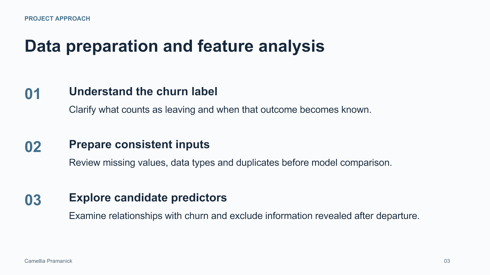

Customer Churn Modeling
A methodology overview of RapidMiner coursework using a Kaggle dataset. Illustrative evaluation guidance is labeled; original model scores are not presented.
![BUSINESS QUESTION Understanding customer departure Camellia Pramanick 02 The question Which customer patterns were associated with churn, and how could analysis inform retention decisions? The coursework Used a Kaggle dataset in a machine-learning coursework project, recalled as a RapidMiner workflow. Project scope Prepared data, explored relevant features and evaluated predictive models to study churn patterns. Evidence boundary This presentation explains the approach. It does not report a verified model ranking, accuracy score or retention uplift.](slide-02.png)

![ILLUSTRATIVE EVALUATION FRAMEWORK A framework for comparing models Camellia Pramanick 04 Baseline comparison Compare candidate models with a simple baseline to determine whether added complexity improves prediction. Held-out evaluation Separate model development from evaluation. Keep preprocessing inside the training workflow to reduce leakage. Useful metrics Review precision, recall and F1 alongside class balance. Accuracy alone can hide missed churners. Error review Examine both missed churners and false alarms, then relate those errors to the cost of customer outreach.](slide-04.png)
![ILLUSTRATIVE BUSINESS INTERPRETATION Prediction should support a retention decision Camellia Pramanick 05 Prioritize review Use risk estimates to identify accounts for further review when outreach capacity is limited. Explain the pattern Connect model signals to understandable customer behavior and check whether the pattern is stable. Test an intervention Evaluate whether an outreach action changes outcomes before claiming that the model reduced churn. Monitor over time Track performance as customer behavior and product offerings change.](slide-05.png)
Read slide text
Slide 1
PROJECT METHODOLOGY Camellia Pramanick 01 Customer Churn Modeling RapidMiner coursework using a Kaggle dataset camelliapramanik.github.io
Slide 2
BUSINESS QUESTION Understanding customer departure Camellia Pramanick 02 The question Which customer patterns were associated with churn, and how could analysis inform retention decisions? The coursework Used a Kaggle dataset in a machine-learning coursework project, recalled as a RapidMiner workflow. Project scope Prepared data, explored relevant features and evaluated predictive models to study churn patterns. Evidence boundary This presentation explains the approach. It does not report a verified model ranking, accuracy score or retention uplift.
Slide 3
PROJECT APPROACH Data preparation and feature analysis Camellia Pramanick 03 01 Understand the churn label Clarify what counts as leaving and when that outcome becomes known. 02 Prepare consistent inputs Review missing values, data types and duplicates before model comparison. 03 Explore candidate predictors Examine relationships with churn and exclude information revealed after departure.
Slide 4
ILLUSTRATIVE EVALUATION FRAMEWORK A framework for comparing models Camellia Pramanick 04 Baseline comparison Compare candidate models with a simple baseline to determine whether added complexity improves prediction. Held-out evaluation Separate model development from evaluation. Keep preprocessing inside the training workflow to reduce leakage. Useful metrics Review precision, recall and F1 alongside class balance. Accuracy alone can hide missed churners. Error review Examine both missed churners and false alarms, then relate those errors to the cost of customer outreach.
Slide 5
ILLUSTRATIVE BUSINESS INTERPRETATION Prediction should support a retention decision Camellia Pramanick 05 Prioritize review Use risk estimates to identify accounts for further review when outreach capacity is limited. Explain the pattern Connect model signals to understandable customer behavior and check whether the pattern is stable. Test an intervention Evaluate whether an outreach action changes outcomes before claiming that the model reduced churn. Monitor over time Track performance as customer behavior and product offerings change.
Slide 6
PROJECT SUMMARY Analytical skills from the coursework Camellia Pramanick 06 Data preparation Feature analysis Predictive model evaluation Business interpretation A customer analytics project focused on understanding churn through machine learning. Dataset source: Kaggle Tool recalled: RapidMiner Context: academic coursework Explore my portfolio